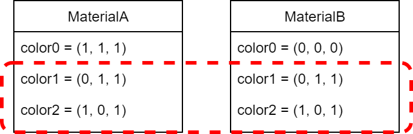

Overview
The NintendoWare 3D module has a feature for material referencing that helps reduce the costs involved in managing materials. The feature allows you to prepare a single material and use it to consolidate the values for settings that are shared by a number of materials.
For example, material A and material B have the same values for the following settings, and you want to manage them as a single set of shared settings.

To manage these values as a single set of shared settings, collect them together in another material (material C) and reference material C from material A and material B. The referenced material (material C) is called the parent material. Material A and material B are called child materials.
Basic Workflow
This section describes the main workflow for material referencing. The workflow described in this section is just an example of workflow assumed for NintendoWare 3D, and the full workflow is not as limited.
The person in charge of parent materials is typically someone, such as the lead artist, who is responsible for the overall design. Lead artists create parent materials for each category in advance. For example, they create materials like metal, nonmetal, wood, skin, hair, and so on. Artists who actually adjust the model's material select the parent material that suits the category of that model and set it so that the actual material references the parent material. By referencing the parent material, it is possible to greatly omit material setting details, so artists can focus on the settings that they are responsible for.
Parent materials are generally created in 3DEditor. You can also create child materials in 3DEditor. You can also export them from the DCC tool using the NintendoWare DCC Plug-In. If you are exporting from the DCC tool, you can automatically assign parent materials created in advance by the lead artist to child materials during exporting. You can also manually assign them after exporting in 3DEditor.
Minimizing the Settings for Child Materials
As described earlier, in a hypothetical workflow, the lead artist decides on the broad settings for the material, and then other artists adjust the color tint of the material for each individual 3D model. By making use of the parent material created by the lead artist, the other artists who are adjusting the child materials can concentrate their efforts on adjusting the color tint.
However, the shader parameters that regular shader developers can configure all end up being displayed in 3DEditor, which is a tool that can be used to configure the material settings.
However, artists responsible for adjusting color tint might be at a loss trying to determine which parameters need to be set. When the lead artist is creating the parent material, that person can restrict the settings that are displayed for the child materials.
By setting restrictions, only the bare minimum of settings for the child materials are displayed, and the artists who are responsible for adjusting color tint can see all of the parameters that need to be configured without getting lost.
Another way that material referencing can be used is by hiding the settings that are irrelevant, so that assignees can better focus on their necessary tasks.
Incorporating Into the Workflow
For more information about incorporating this feature into your workflow, see Material Referencing in the 3DEditor documentation.
CONFIDENTIAL